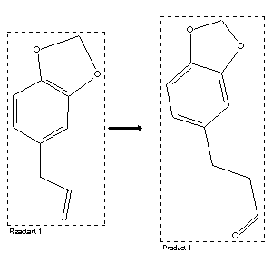

|  |
| FA | RX(1); FLST(1); RX(3) |
Reaction (1 of 1)
| Reaction ID | 1767866 |
| Reactant BRN | 136380 |
| Reactant | 5-allyl-benzo[1,3]dioxole |
| Product BRN | 156510 |
| Product | 3-benzo[1,3]dioxol-5-yl-propionaldehyde |
| No. of Reaction Details | 3 |
Reaction Details (1 of 1)
| Reaction Classification | Preparation |
| Reagent | 1.) disiamylborane; 2.) PCC |
| Other Conditions | 1.) ether, 2 h, 0 deg C; 2.) CH2Cl2, reflux, 2 h |
| Comment | Yield given. Multistep reaction |
| Citation Pointer | 5620640; Journal; Brown, Herbert C.; Kulkarni, Surendra U.; Rao, C. Gundu; Patil, Vemanna D.; TETRAB; Tetrahedron; EN; 42; 20; 1986; 5515-5522; |
Reaction Details (2 of 1)
| Reaction Classification | Preparation |
| Reagent | 1.) Sia2BH, 2.) pyridinium chlorochromate |
| Other Conditions | 1.) ether, 0 deg C, 2.) CH2Cl2, reflux |
| Comment | Yield given. Multistep reaction |
| Citation Pointer | 5573006; Journal; Brown, Herbert C.; Kulkarni, Surendra U.; Rao, C. Gundu; SYNTBF; Synthesis; EN; 2; 1980; 151-153; |
Reaction Details (3 of 1)
| Reaction Classification | Multistage |
| Yield | 81 percent (BRN=156510) |
| No. of Stages | 2 |
| Stage 1 | |
| Stage 2 | |
| Reagent | acetoxyborohydride; pyridinium chlorochromate |
| Solvent | tetrahydrofuran; CH2Cl2 |
| Time | 16 hour(s); 1 hour(s) |
| Temperature | 20 |
| Other Conditions | Heating |
| Citation Pointer | 6324491; Journal; Dhillon, Ranjit S.; Kaur, Avinder Pal; Kaur, Gurpreet; JICSAH; J.Indian Chem.Soc.; EN; 77; 9; 2000; 453 - 454; |
Reference (1 of 3)
| Citation Number | 5573006 |
| Document Type | Journal |
| Authors | Brown, Herbert C.; Kulkarni, Surendra U.; Rao, C. Gundu |
| CODEN | SYNTBF |
| Journal Title | Synthesis |
| Language Code | EN |
| Number | 2 |
| Publication Year | 1980 |
| Page | 151-153 |
Reference (2 of 3)
| Citation Number | 5620640 |
| Document Type | Journal |
| Authors | Brown, Herbert C.; Kulkarni, Surendra U.; Rao, C. Gundu; Patil, Vemanna D. |
| CODEN | TETRAB |
| Journal Title | Tetrahedron |
| Language Code | EN |
| (Series) Volume | 42 |
| Number | 20 |
| Publication Year | 1986 |
| Page | 5515-5522 |
Reference (3 of 3)
| Citation Number | 6324491 |
| Document Type | Journal |
| Authors | Dhillon, Ranjit S.; Kaur, Avinder Pal; Kaur, Gurpreet |
| CODEN | JICSAH |
| Journal Title | J.Indian Chem.Soc. |
| Language Code | EN |
| (Series) Volume | 77 |
| Number | 9 |
| Publication Year | 2000 |
| Page | 453 - 454 |